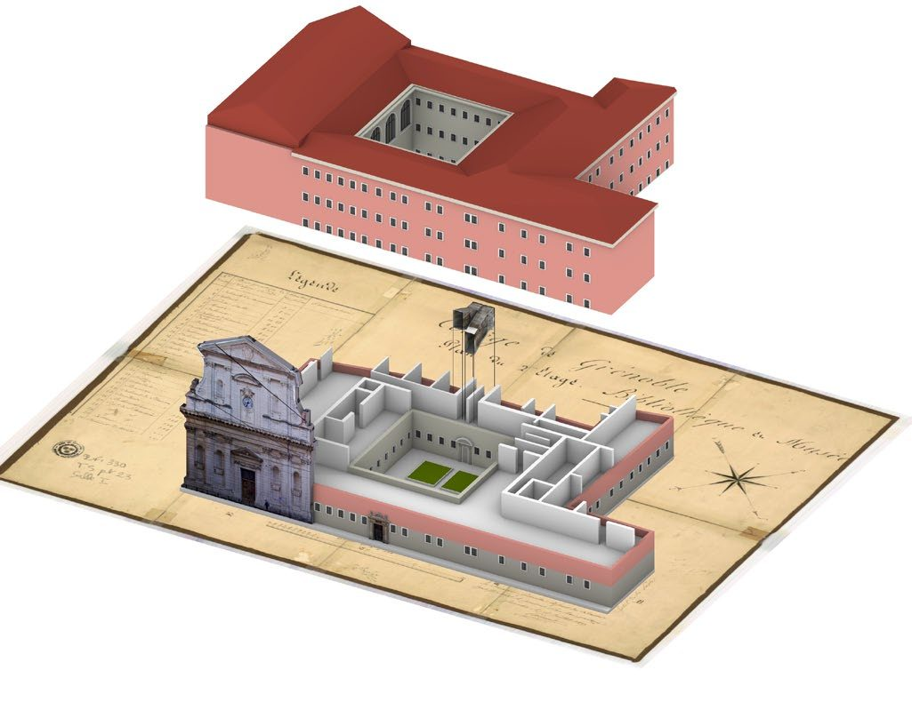
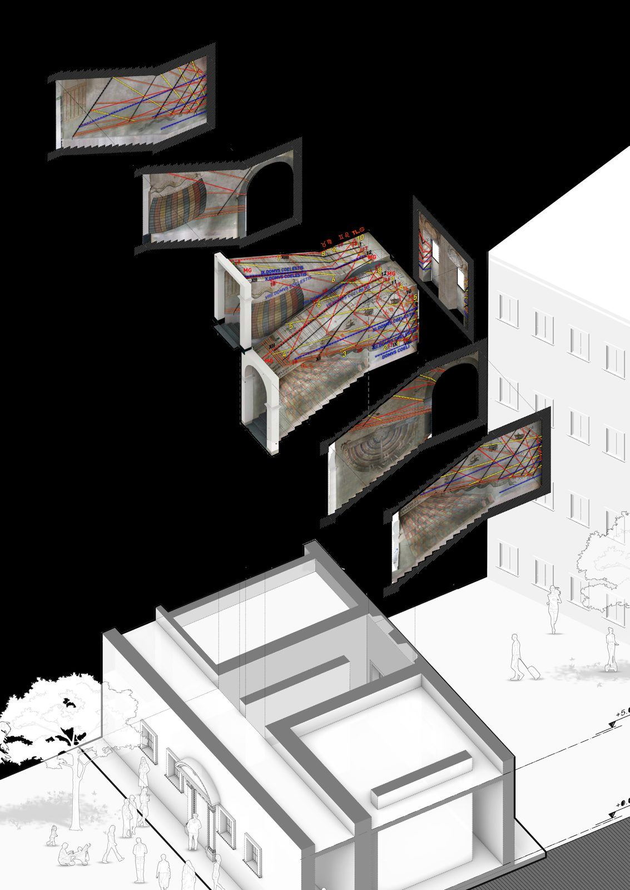

Model“The Invisible Gem of Horloge Solaire — Stendhal” on Sketchfab.
On sitereachable by QR code on the staircase.
Contactportfolio.hotrongnhan.org
Chapter III
The Invisible Gem, Made Visible
The reconstructed staircase, published as an interactive model — so its one moving part can be followed at any hour, on any day.
The last part of the thesis turns the survey outward. The reconstructed staircase is published as an interactive 3-D model so that a visitor on the stairs — or anyone with the link — can move through the room and see each layer of Bonfa's system on its own. Scan a QR code on site and the “quiz” becomes a guided view.
iHow to read the room in the model
- Orbit to the landing and find the two window mirrors and the cartouche TEMPORI ET ÆTERNITATI.
- Follow one bright spot from the lower west wall (morning) up over the ceiling and down the east wall (afternoon).
- Isolate a colour — black French hours, yellow Babylonian, red Italian, blue houses, ochre declination — and watch where they cross.
- Open the tables on the central walls: the Universal Clock, the Marian and Jesuit calendars, HOROLOG’ NOVU, the epacts, the King's Calendar.

iiMotion, on purpose
The dial has exactly one moving part — a coin of light that crosses the room from sunrise to sunset. The model keeps that in mind: it turns slowly on its own, and on the cover it speeds up as you scroll past, the way the light quickens across the wall near noon. Everything else stays still, so the geometry stays readable.

iiiWhat it is for
“In the end, we plan to create a digital tool to teach and present about this room.” The model is that tool: a way to hand back the history, mathematics, astronomy and geography that Bonfa compressed into a stairwell in 1673 — an educational aid for a guide, and a second look for a visitor who only gets one Saturday a month.